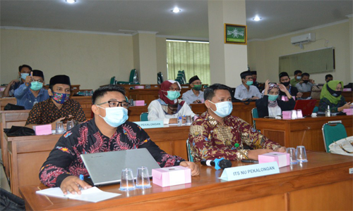
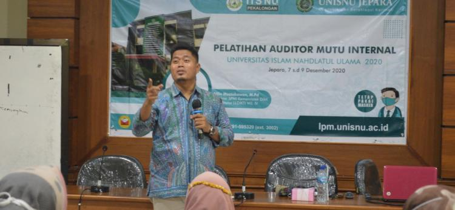

|
Pelatihan AMI, Perkuat Sistem Penjaminan Mutu Internal Published by admin on 20/12/2020  Source: https://itsnupekalongan.ac.id/arsip/1105/pelatihan-ami-perkuat-sistem-penjaminan-mutu-internal/
Lembaga Penjaminan Mutu (LPM) Unisnu Jepara menggelar Pelatihan Auditor Mutu Internal 2020 dengan LPM Institut
Teknologi dan Sains Pekalongan sebagai Co Host kegiatan. Kegiatan ini dilakukan sebagai bentuk internalisasi
budaya mutu kepada calon auditor. Sebagaimana diketahui audit mutu internal merupakan bagian dari siklus
penjaminan mutu yang sangat penting. Ketercapaian peningkatan mutu akan dapat diketahui dengan jelas. Peran
auditor sebagai aktor utama dalam AMI sangat menentukan agar sistem penjaminan mutu berjalan dengan sehat.
Pelatihan yang diselenggarakan selama tiga hari pada 7-9 Desember 2020 ini bertempat di Ruang Seminar Pascasarjana Unisnu
Jepara dan diikuti oleh 26 peserta dari Unisnu dan 4 peserta ITS NU Pekalongan. Wakil Rektor I Unisnu Jepara, Dr. H. Akhirin,
M.Ag dalam sambutannya rasa syukur bahwa kegiatan pelatihan yang rangkaiannya panjang dan beragenda padat dapat diikuti banyak peserta.
“Semoga semua yang dimulai dengan baik ini dapat berakhir dengan baik dalam artian peserta lulus dan menjadi jalan dalam menguatkan
penjaminan mutu di institusi masing-masing,” ungkapnya.
Narasumber pada pelatihan ini adalah Alfin Mustikawan, M.Pd dari UIN Maulana Malik Ibrahim Malang yang juga merupakan Trainer SPMI Kemdikbud
dan Fasilitator SPMI LLDIKTI VII. Alfin Mustikawan menyampaikan materi tentang sustainability audit, bagaimana audit dapat menjadi tindakan
preventif terhadap hal-hal di luar kendali. Materi disajikan dalam tiga sesi yaitu: Teori Audit Internal, Teori Penyusunan Pertanyaan Audit,
Teori Penyusunan Laporan Audit.

Peserta pelatihan yang terbagi menjadi 6 kelompok juga melakukan simulasi audit sesuai dengan Standar dalam SPMI yang dimiliki Unisnu Jepara.
Sebanyak 4 Kelompok mengaudit Standar Pendidikan dengan auditee 4 Prodi di Unisnu yang sedang dan akan melakukan proses akreditasi. Sementara 2
kelompok lainnya mengaudit Standar Penelitian dan Standar Pengabdian Masyarakat dengan auditee Lembaga Penelitian dan Pengabdian kepada Masyarakat.
Pelatihan yang berakhir tanggal 9 Desember menghasilkan lebih dari 10 orang auditor yang dinyatakan lulus dengan kriteria penilaian kemampuan auditor
menggali informasi dari auditee, menarik akar masalah, memberikan rekomendasi perbaikan, dan kemampuan menyusun laporan.
Dr. Aida Nahar, SE., M.Si (Kepala LPM Unisnu Jepara) menyampaikan rasa terima kasihnya karena seluruh peserta berkomitmen untuk menyelesaikan pelatihan
selama tiga hari. “Salut kepada seluruh peserta yang menyelesaikan pelatihan dan menjadi bagian dari proses pembumian budaya mutu di Unisnu. Semoga auditor
yang lolos dapat memperkuat sistem penjaminan mutu internal Unisnu Jepara dan ITS NU Pekalongan.” Tuturnya di akhir kegiatan.
Perwakilan peserta dari ITS NU Pekalongan, Devi Nawang, M.Kom juga menyatakan antusiasmenya dalam mengikuti kegiatan ini. “Senang sekali berada di kegiatan ini,
kami jadi lebih mengerti tentang mutu dan proses penjaminannya. Semoga bisa menjadi bekal bagi kami untuk menata mutu di Prodi kami,” ungkapnya
Categories
|